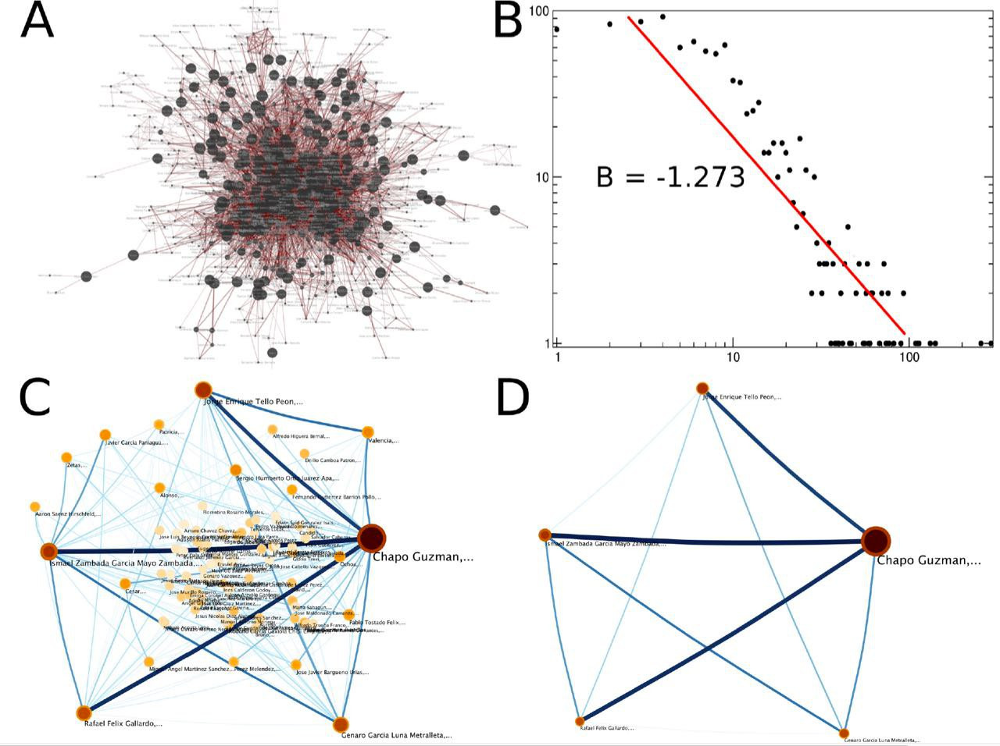

Complexity to Understand Violence

Scope of the Satellite Meeting
Violence, particularly in México, has become one of the most worrisome problems of modern society.
Several efforts regarding the control and prevention of violence, or at least the reduction of the
social and economic impact of the problem have been attempted at many different levels. However,
despite said efforts, if anything, violence seems to be increasing. Taking into account the
multiple factors involved in the emergence, evolution and resilience of violence, a Complex Systems
approach to analyze and understand the origins and development of this phenomenon is appealing.
Diverse research groups have tried to incorporate database information, coming from security forces,
NGO's or government agencies and analyze such data using computational tools with the objective of
dissecting the underlying causes to violence, its patterns and its consequences. In particular,
Network Theory has emerged as a tool to integrate several sources of information in an intelligible
and revealing way.
CALL FOR ABSTRACTS
The satellite meeting will focus on epidemic-related challenges in a fully interdisciplinary
fashion, bringing together researchers from a broad rang...
GOALS
To discuss the state-of-the-art in the field of implementation of complex systems and network
theory approaches to dissect and understand the mechanisms of the origin and evolution and
distribution of violence from different points of view: social, geographical and statistical.
esa es del de violencia
SUBMISSION
Submissions will be made by sending one A4 page abstract in pdf via Easychair. The deadline
or abstract submission is 7th July 2017. The contributions to the event will be evaluated
by the programme committee through a peer review process that will account for the scientific
quality as well as for the relevance of the contribution to the aims of the satellite.
The authors of accepted abstracts will be notified via e-mail by 14th July 2017.
REGISTRATION
All the participants of the satellite meeting (with or without abstract submission) must
register for the Conference on Complex Systems 2017
TOPICS
- Criminal Network analysis techniques.
- Community detection in Criminal Networks.
- Flow of information in Criminal Networks.
- Visualization techniques in Criminal Networks.
- Spatio-temporal analysis in Criminal Networks.
- Simulations and real-case studies of attacks to CNs.
- Crime on the Web and crimes using the Web.
IMPORTANT DATES
Abstract Registration Deadline: 07th July
Notifications of Acceptance: Rolling (to 14th July)
Paper Submission Deadline: 18th August
ORGANIZING COMMITTEE
Dr. Jesús Espinal Enríquez
Dr. Hernán Larralde Ridaura